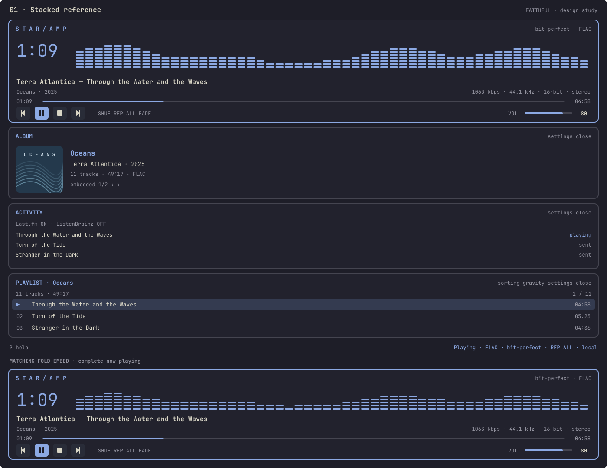
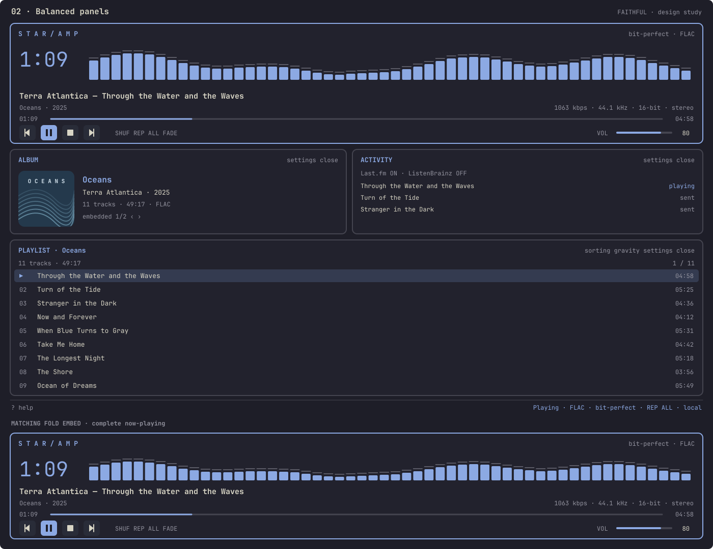
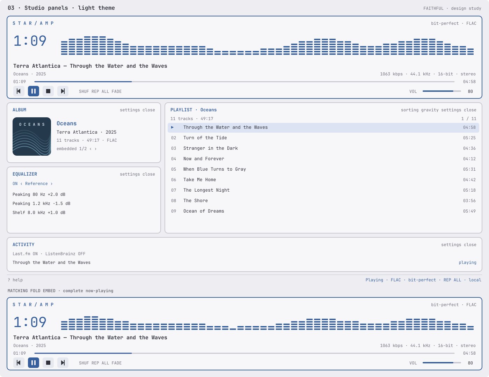
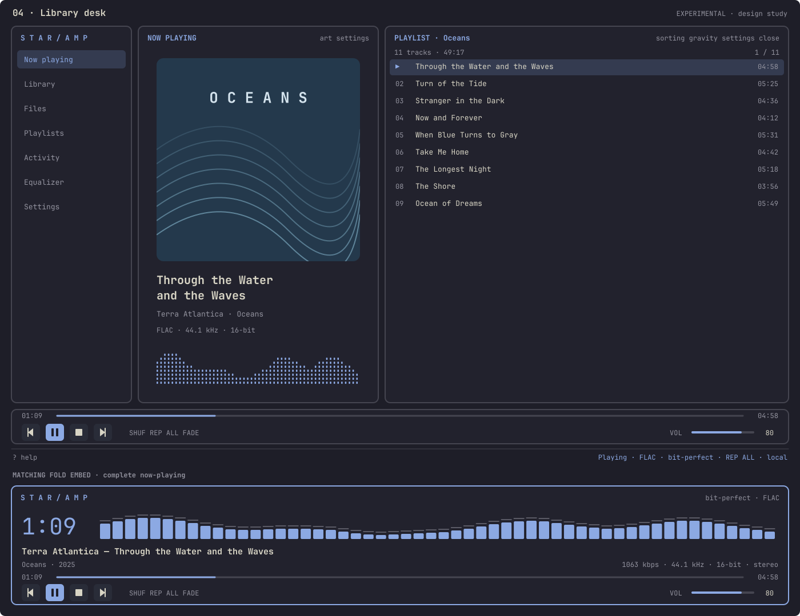
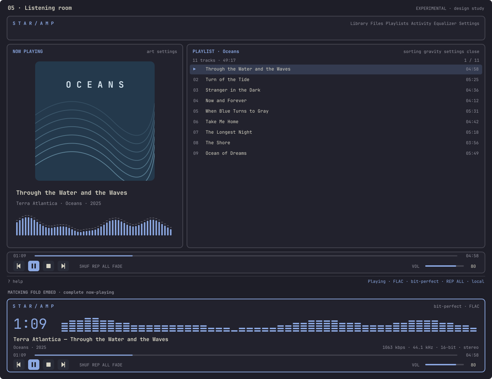
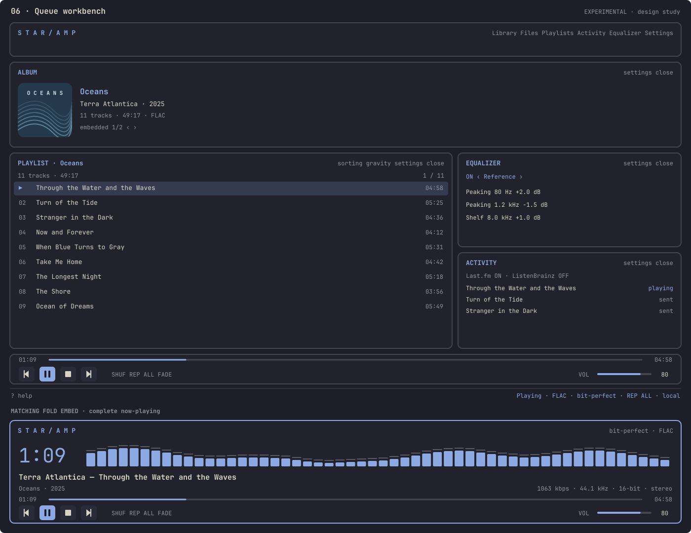

01 — Stacked reference
Faithful · original panel hierarchy

Open full-size image ↗Six design studies. Options 01–03 refine the existing interface; 04–06 explore a separate desktop layout. Every image includes a matching FOLD now-playing embed at the bottom. Click any image to inspect it at full size.
Faithful · original panel hierarchy

Open full-size image ↗Faithful · album and activity side by side

Open full-size image ↗Faithful · light theme, compact side panels

Open full-size image ↗Experimental · navigation, artwork, queue

Open full-size image ↗Experimental · artwork-led listening layout

Open full-size image ↗Experimental · queue, equalizer, activity

Open full-size image ↗